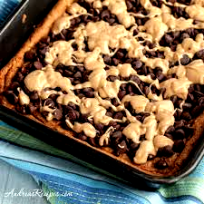

Peanut Butter and Chocolate Chips on Keto Bread

Description
This is another easy little snack recipe that my girlfriend has showed me.
It is also a very minimal recipe that only requires three ingredients and it is scrumptious.
Ingredients
- Keto Bread
- Peanut Butter
- Chocolate Chips
Steps
- Grab a slice of Keto bread on put it in the toaster until golden brown.
- Grab the peanut butter and spread about 20g on the now-made toast.
- Sprinkle about 20g of chocolate chips on top and lightly pat it down.
- Enjoy!